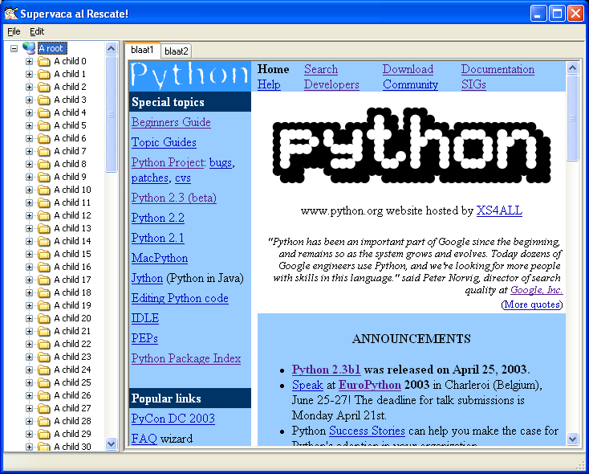
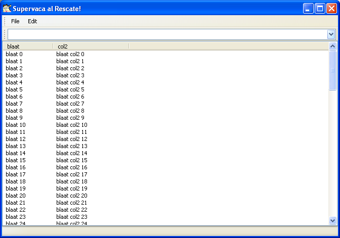

Venster is a highly native Windows GUI toolkit for Python based on the ctypes ffi library. The aim of Venster is to be a very lightweight wrapper around the standard Win32 API, making it easy to write slick windows applications in pure Python.
Please note that Venster is currently very alpha, and it is provided to get feedback from the Windows and Python developer communities.
Venster is an open source library and is hosted at Sourceforge.
A mailing list for general discussion on Venster is hosted by sourceforge. You can join the list here...
Howto create a dialog with Venster
Information for developers who want to contribute can be found here ...
Installing venster; first download and install the ctypes 0.6.2a package from here , Then download the source distribution (.zip file) of Venster 0.3 from here
Unpack the Venster zip file in some folder; and issue a python setup.py install in that folder.
The venster distribution contains a subfolder test which contains some samples on how to use Venster.
test_app.pyw is an example of a typical explorer style windows program:

It uses the windows TreeView and TabControl Common Controls. It also hosts the Internet Explorer ControlAnother example is test_coolbar:

This example shows the use of a Toolbar Common Control with a menu. This is a very sleek UI feature that was first introduced by Internet Explorer.